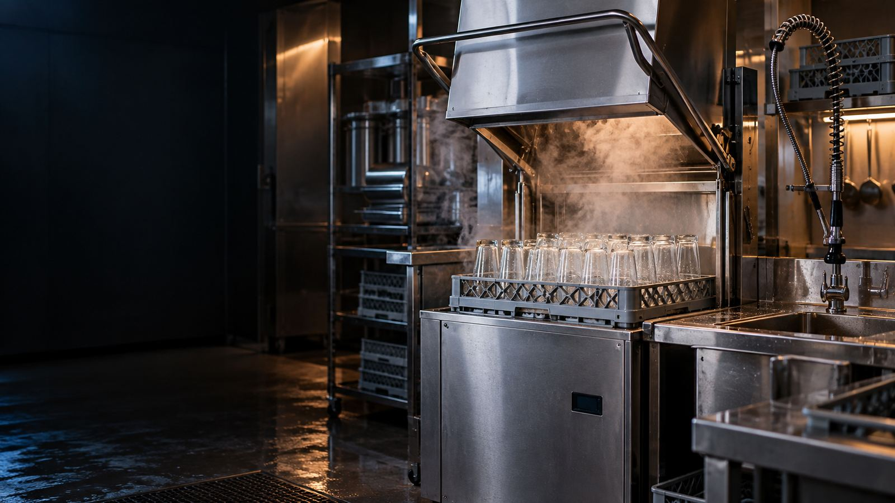

Fast, Expert Service to Keep Your Kitchen Running
Whatever you call it in your kitchen, a dishwasher, dish machine, pot washer or glass washer, we repair the commercial warewashing equipment that keeps clean dishes moving: door-type, conveyor, undercounter and glasswasher units, plus booster heaters.
When a high-temp machine takes too long to become ready, stops during the cycle, or delivers a final rinse below sanitizing temperature, we measure the incoming, wash-tank, and final-rinse temperatures with a calibrated instrument. We verify fill level, rinse flow and pressure, then test the booster-heater voltage and current draw, elements, contactors, thermostats, probes, and high-limit controls.
When a low-temp dishwasher leaves residue, produces inconsistent sanitizer concentration, or fails to feed detergent, we observe the fill, wash, drain, and rinse sequence and verify water temperature and wash pressure. We prime and measure each chemical feed, then inspect pickup and squeeze tubes, dispenser pumps, probes, switches, wash pump, and spray nozzles.
When racks stall, dishes leave the conveyor with debris, or water remains in the tanks after shutdown, we watch the machine through a complete cycle to locate where the sequence breaks down. We check tank fill level, strainers, pump pressure, spray arms and nozzles, drain valve or pump, conveyor motor and drive, limit switches, and final-rinse flow and temperature.
When glassware comes out cloudy or spotted, lipstick remains on rims, or the glasswasher will not fill or drain, we check the complete timed cycle rather than treating it as a rinse-only problem. We inspect screens, rotating arms and jets, wash and recirculation pumps, drain valve or pump, rinse and chemical feeds, controls, and the tank heater or booster when equipped.
Commercial dishwasher repair in Memphis typically costs $150-$450. Wash arm replacement runs $125-$200, heating element repair $175-$350, and pump replacement $200-$400. Call Rapid Pro Maintenance at (901) 257-9417 for a free estimate with no hidden fees.
Poor cleaning is usually caused by clogged wash arms, low water temperature, worn spray nozzles, low water pressure, or incorrect detergent levels. High-temp dishwashers need 180°F final rinse for sanitization. Our technicians can diagnose and repair same-day to get you back to passing health inspections.
Commercial dishwashers should be professionally serviced every 3-6 months depending on usage. High-volume restaurants need quarterly maintenance. Regular service includes deliming, checking heating elements, inspecting pumps, and calibrating chemical dispensers to ensure sanitization standards are met.
Rapid Pro Maintenance repairs all major commercial dishwasher brands including Hobart, Jackson, CMA, Meiko, Winterhalter, Champion, and Ecolab. We service high-temp, low-temp, door-type, conveyor, and glasswashers throughout Memphis, Germantown, Bartlett, and Collierville.
A dishwasher not draining is typically caused by a clogged drain line, failed drain pump, blocked strainer basket, or kinked drain hose. Food debris buildup is the most common cause. Call (901) 257-9417 for same-day service - we'll clear the blockage and inspect the drain system.
A broken dishwasher can shut down your kitchen. Call now for fast, professional repair.
Call (901) 257-9417